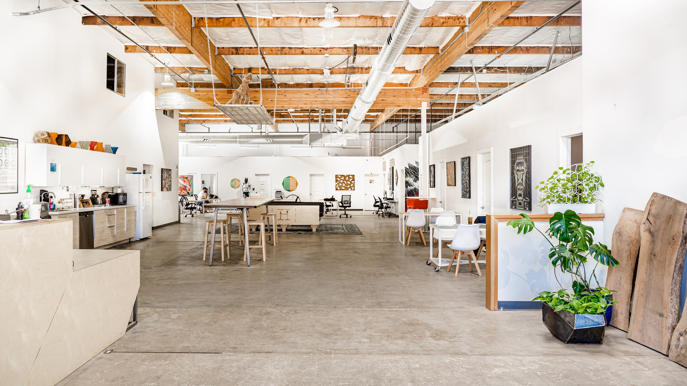

The closing date for Hackerlab has come and gone but the community in Sacramento and the need for these kinds of spaces is still very much alive.
If you have the means to help explore options to re-open Hackerlab or begin a new makerspace in Sacramento reaching out to their staff or previous members would still a good starting point.
This page was originally created after Hackerlab's announcement that they would be closing. Thank you for all the support and lively discussion from the Hacker News community on this.
Hacker Lab is Closing [discussion] Please Save Hacker Lab [discussion]This is a humble plea to any potential angel investors, philanthropists or socially-minded tech millionaires out there to please save Hacker Lab, a beloved world-class makerspace in the heart of midtown Sacramento. According to the staff, barring any major financial assistance offers or opportunities they will begin closing at the end of July, 2022.
I suspect I am not alone in saying that Hacker Lab is without a doubt the most inspiring, professional and well-equipped makerspace that I have ever encountered. I'm a fairly new member and not an official representative of the space but as a remote tech worker and artist I'm finding it nearly impossible to imagine Sacramento's tech or arts culture without it and I desperately want it to survive in some form.
Again the staff has expressed that they are open to financial assistance and alternatives to closing. If you are able to help in any way please reach out directly to the Hacker Lab team. Thank you for checking this out and passing it along if you can. üôè‚ú®
Hacker Lab has been operating for the past decade in Sacramento, at times with multiple branches in neighboring communities. During that time they've offered an enormous range of resources and services that have helped to make Sacramento one of the most advantageous cities in California for aspiring artists, makers and creatively-inclined programmers.
No other facility in Sacramento or any other city I've personally lived in compares to the range of Hacker Lab's resources, and for many members there are truly no alternatives in terms of fulfilling the practical creative needs these represent.

When I first toured Hacker Lab I was legitimately shocked at the range of tools and equipment they had available. As someone who had moved to Sacramento relatively recently it was beyond inspiring and fundamentally changed my outlook for a future here.
Again they have announced that they will be selling off this equipment in some form and if anyone had the capital necessary this could represent a unique opportunity to acquire all the hardware necessary to stock a world-class makerspace in one sweep rather than piecemeal. Of course it would make infinitely more sense to also take advantage of the space and devoted staff that also already exist and have been maintaining this equipment and training people on it for the past 10 years.
Below I've tried to list out Hacker Lab's major equipment in the hopes of illustrating what a truly amazing space this is. In addition to all this there are innumerable smaller general purpose and niche tools available.
Again, Hacker Lab is undoubtedly the most inspiring, professional and well-equipped space that I have ever worked in. From the perspective of a remote tech worker and artist who is still relatively new to Sacramento the loss of Hacker Lab feels absolutely devastating. The tech and arts culture of this city will be a fundamentally different without the presence of this kind of makerspace.
If you are able to help or know anyone that might be please pass this page along or reach out directly to the Hacker Lab team. Thank you so much again for checking this out. üôè‚ú®
click here for Hacker Lab's official announcement